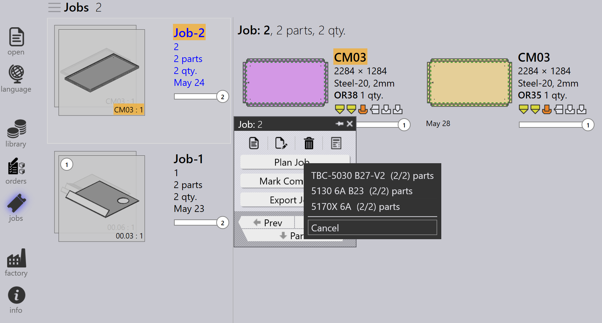

Ordrer
En ordre definerer, hvilke dele der skal fremstilles, i hvilken mængde og til hvornår. Den styrer produktionsplanlægning og -udførelse i TruSmartCAM. Ordrer kan oprettes eller importeres ved hjælp af forskellige metoder, og de kan konverteres til jobs til produktionsplanlægning.
Ordrepanel

|
|


Rediger ordrer
Vælg en eller flere ordrer, og højreklik for at ændre almindelige ordredetaljer såsom mængde, leveringsdato, prioritet og kundeinformation.
Hvis flere valgte ordrer kræver forskellige værdier, skal De bruge Check-out for Editing-indstillingen til at redigere hver ordre individuelt baseret på kravet.


Alle opdateringer af ordrerne anvendes straks på databasen. Brug Slet-kommandoen til at fjerne ordrer fra ordrebiblioteket.
| Delete-kommandoen fjerner kun ordrerne. Dele, der er knyttet til de respektive ordrer, slettes ikke fra delbiblioteket. |
Planlægning af ordrer
Vælg en eller flere ordrer, højreklik, og klik på Ny… → Job for at konvertere de valgte ordrer til jobs. Brug sortering og filtreringsindstillinger til at gruppere relevante ordrer sammen før job-oprettelse.

Når ordrerne er konverteret til et job:
-
Jobbet flyttes til Jobs-siden
-
Ordrerne fjernes fra ordrelisten
-
Standard job-planlægningsworkflowet kan derefter bruges til produktionsplanlægning og nesting

For mere information om job-planlægningsworkflowet, se Auto Plan
Yderligere information
-
Hvis et job, der indeholder ordrer, slettes, flyttes de tilknyttede ordrer automatisk tilbage til Orders Ready-siden, medmindre jobbet eller delen er markeret som Completed.

-
Ordrer kan tilføjes til eller fjernes fra et eksisterende job gennem Redigering af job-vinduet baseret på produktionskrav.